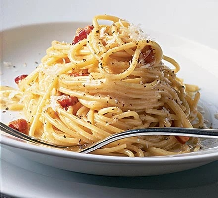

Home
Recipe for Spaghetti Carbonara

Description
Discover how to make superb spaghetti carbonara. This cheesy pasta dish
is an Italian favourite and with the right technique, you can make it
perfect every time!
Ingredients
- 100g pancetta
- 50g pecorino cheese
- 50g parmesan
- 3 large eggs
- 350g spaghetti
- 2 plump garlic cloves, peeled and left whole
- 50g unsalted butter
- Sea salt and freshly ground black pepper